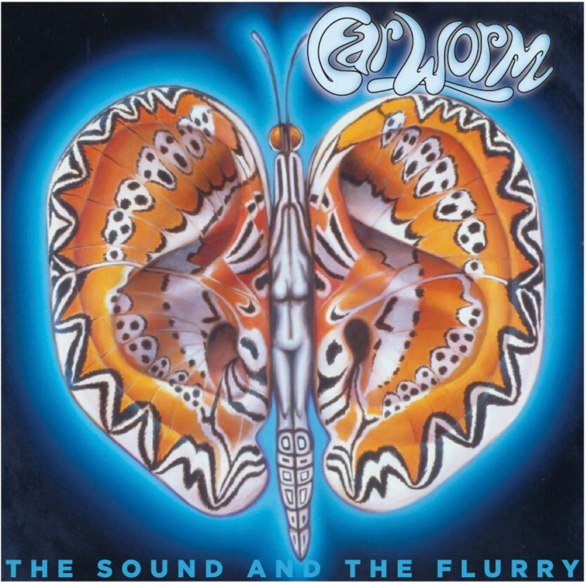
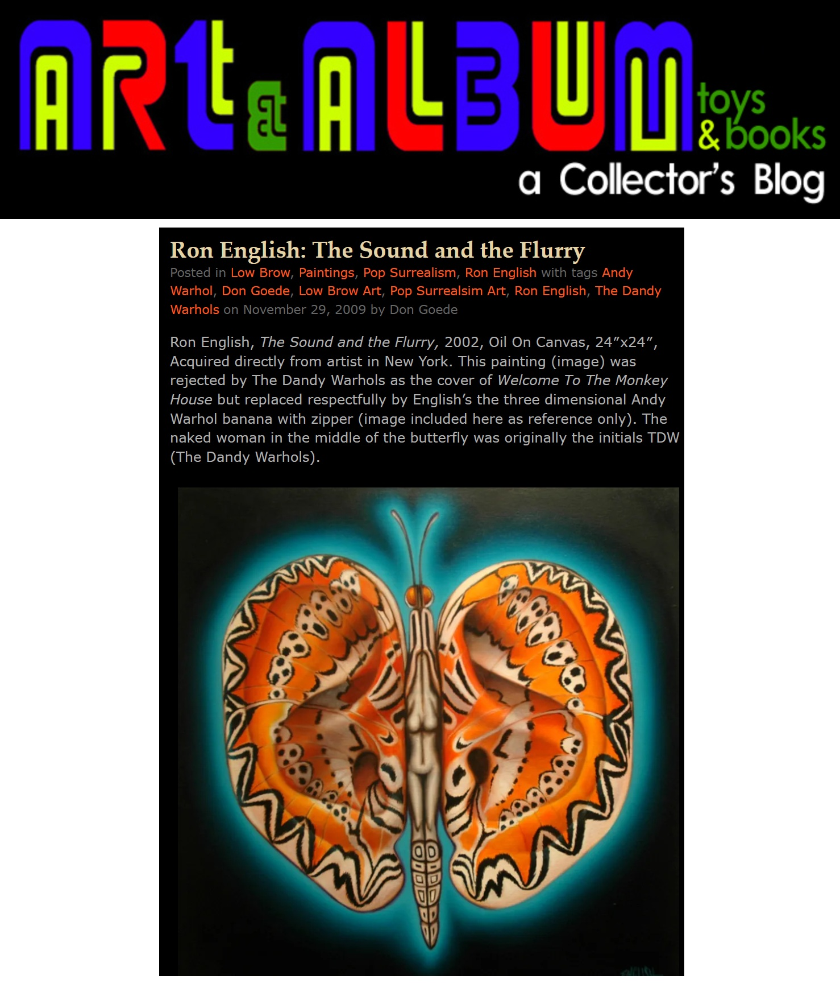

Literature
Блинцов, “Ron English поп-арт, клоунада и стёб”, Art Assorty, January 23, 2013.

Ancillary Documentation


Блинцов, “Ron English поп-арт, клоунада и стёб”, Art Assorty, January 23, 2013.

